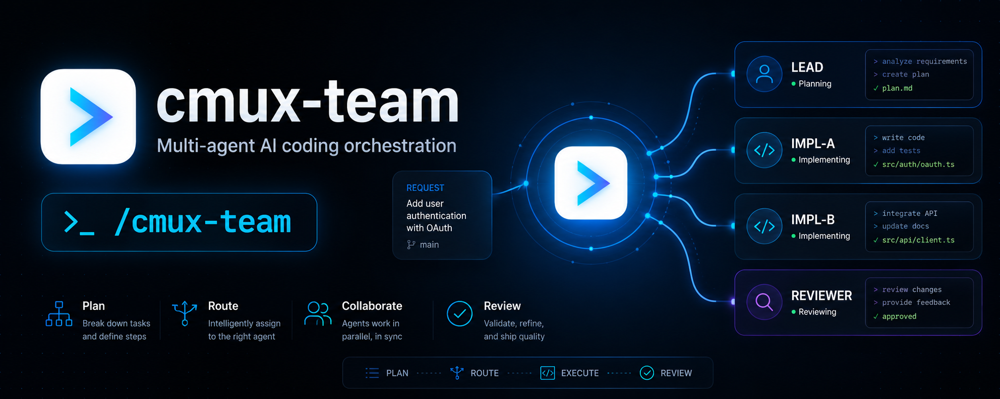

Plan the optimal team, then launch the whole observable team with one line
cmux-team designs the optimal agent team for a coding objective — role, model, thinking level, and count — then writes an executable launch kit: a lead prompt, one worker prompt per teammate, and a one-line launcher. Review the kit, then run the launcher yourself — it cold-starts cmux, boots the lead, and the lead spawns every worker into its own named pane. Built to orchestrate Claude Code and Codex together, on purpose.
"Spin up some agents" hides four decisions
Every multi-agent coding run quietly requires you to answer questions most people skip past. Skip them and you either overpay in tokens or under-power the task.
Which model, per role
A lead judging two builds needs different strength than an implementer grinding through boilerplate.
How hard each should think
Thinking level is a dial, not a default — mechanical edits and open-ended synthesis don't deserve the same setting.
How many agents
Every extra agent is real tokens. Right-sizing beats reflexively parallelizing.
Whether you need a team at all
Trivial tasks deserve a team of one. Over-staffing is its own failure mode.
Six moves from objective to a running team
Given a coding objective, cmux-team reasons through staffing the same way a technical lead would — then writes an executable launch kit, not just a spec.
Ground in cmux
Confirm the cmux CLI and load the vendored references — the latest cmux verbs & docs — so the plan never invents syntax.
Analyze
How open-ended is it? How many distinct viable approaches exist? What's parallelizable?
Pattern
Pick a topology: diverse-build + judge, decompose + assemble, or solo.
Staff
Assign model, thinking level, and headcount per role. Right-size every seat.
Generate the launch kit
Write .cmux-team/<slug>/: a lead prompt, one worker prompt per teammate, and the one-line launcher.
Confirm, then launch
Show the roster and ask. On your yes it runs the launcher for you — nothing spawns until you confirm.
Worked example — /cmux-team "add rate limiting to the POST /orders endpoint"
| Role | Model | Thinking | × | Job |
|---|---|---|---|---|
| Lead | claude-opus-4-8 |
high | 1 | Decompose, judge on rubric, synthesize, verify |
| Implementer A | claude-opus-4-8 |
high | 1 | Build in worktree ../ord-a; blind to B |
| Implementer B | codex · gpt-5.5 |
high | 1 | Build in worktree ../ord-b; diverse 2nd approach |
| Reviewer | claude-sonnet-5 |
medium | 1 | Edge-case tests; verify the synthesis |
.cmux-team/rate-limit-orders/
├─ launch.sh # the one-line launcher, below
├─ lead.md # spawn recipe + protocol + rubric + observability
├─ worker-implementer-a.md
├─ worker-implementer-b.md
├─ worker-reviewer.md
└─ roster.md # human-readable roster + launch instructionscmux new-workspace --name "team:rate-limit-orders" --cwd "$(pwd)" \
--command 'claude --dangerously-skip-permissions --model opus[1m] \
--append-system-prompt-file .cmux-team/rate-limit-orders/lead.md \
"Bootstrap your team now, per your system prompt."'
Running that one line cold-starts cmux, boots the lead,
and the lead spawns implementer-a, implementer-b,
and reviewer into their own named panes
(--focus false, additive layout). Each worker boots with
cmux send "claude --model … --append-system-prompt-file worker-<role>.md",
prints ready:<role>, then works. Live status/progress
chips (cmux set-status / cmux set-progress) and
desktop notifications (cmux notify) surface progress as it
happens — you watch the team work instead of guessing. cmux-team stops
here and asks first: nothing spawns until you confirm — then it
runs the launcher for you.
A real team, not a prompt you paste in
The plan used to stop at an inert prose block you'd have to copy into a chat yourself. Now cmux-team writes something you can execute — and it stays honest about where the cost lives.
A real team standup
bash .cmux-team/<slug>/launch.sh cold-starts cmux, boots the lead, and the lead spawns every worker into its own pane and coordinates them — no copy-pasting a prompt by hand.
Observability by default
Live named panes (lead, implementer-a, implementer-b, reviewer, …), status/progress chips via cmux set-status / set-progress, and desktop notifications on ready/done/blocked via cmux notify.
Diverse-build + judge quality
Independent implementations from different model families build in isolated worktrees; the lead judges both blind on a rubric and synthesizes the best of each.
Right-sized staffing
Every extra agent is real tokens. The planner staffs 3–6 agents for real work, or a team of one when the objective is trivial — never reflexively parallelized.
The human review gate
cmux-team stops after writing the kit and asks “Launch this team?” Nothing spawns until you confirm — you review the roster and prompts under .cmux-team/<slug>/ and adjust them first. Planning is cheap; execution is where the cost lives.
It launches for you
On your go-ahead cmux-team runs the launcher itself, after a cmux ping preflight. cmux's socket only answers a trusted caller, so if your agent runs outside a cmux terminal surface it hands you the one-line launcher instead of failing silently.
One command, then one line to plan
cmux-team installs as a skill into your coding agent's skills directory via the Vercel skills ecosystem.
Prerequisites
- The cmux app + CLI, with the official
/cmuxskills installed (cmux docsshould work). - A coding agent — Claude Code, Codex, or similar.
- Node/npx available on
PATHfor the installer.
People staffing agents on purpose
Running Claude Code and Codex together
You already reach for multiple agents on non-trivial work. cmux-team turns "spin some up" into a reviewable launch kit before any tokens burn.
Standardizing agent workflows
Bake a consistent roster, rubric, protocol, and observability wiring into how your team stages diverse-build-and-judge or decompose-and-assemble work.
Learn to operate AI agent teams
Planning the roster is one skill. Running a fleet of agents well, day to day, is another — that's what AOA teaches.